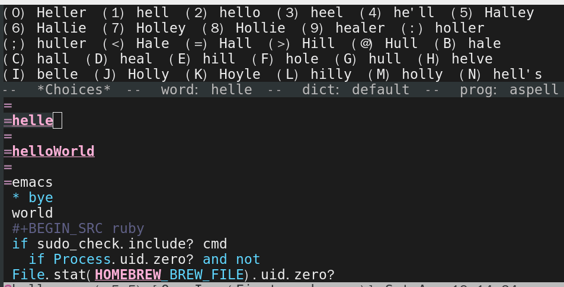

What's the best spell check setup in emacs
UPDATED:
CREATED:
I will show the minimum setup and explain details.
Topics covered in official manual (flyspell-mode-predicate, for example) are NOT discussed.
You can check my complete configuration HERE.
Suggestion for non-programmers
Emacs finds the right dictionary by querying the locale.
You can run the command locale in the shell to get current locale.
Below set up force Emacs to use the dictionary "en_US":
;; find aspell and hunspell automatically
(cond
;; try hunspell at first
;; if hunspell does NOT exist, use aspell
((executable-find "hunspell")
(setq ispell-program-name "hunspell")
(setq ispell-local-dictionary "en_US")
(setq ispell-local-dictionary-alist
;; Please note the list `("-d" "en_US")` contains ACTUAL parameters passed to hunspell
;; You could use `("-d" "en_US,en_US-med")` to check with multiple dictionaries
'(("en_US" "[[:alpha:]]" "[^[:alpha:]]" "[']" nil ("-d" "en_US") nil utf-8)))
;; new variable `ispell-hunspell-dictionary-alist' is defined in Emacs
;; If it's nil, Emacs tries to automatically set up the dictionaries.
(when (boundp 'ispell-hunspell-dictionary-alist)
(setq ispell-hunspell-dictionary-alist ispell-local-dictionary-alist)))
((executable-find "aspell")
(setq ispell-program-name "aspell")
;; Please note ispell-extra-args contains ACTUAL parameters passed to aspell
(setq ispell-extra-args '("--sug-mode=ultra" "--lang=en_US"))))
That's it!
Some people prefer hunspell because hunspell gives better suggestions for typo fix. We can run both programs to demonstrate,
echo htink | aspell -a --sug-mode=ultra --lang=en_US
echo htink | hunspell -a -d en_US
Run man aspell or man hunspell in shell if you have more questions. I've nothing more to say.
Suggestion for programmers
I recommend aspell instead of hunspell (Though hunspell is fine).
Please insert below code into your ~/.emacs:
;; if (aspell installed) { use aspell}
;; else if (hunspell installed) { use hunspell }
;; whatever spell checker I use, I always use English dictionary
;; I prefer use aspell because:
;; 1. aspell is older
;; 2. looks Kevin Atkinson still get some road map for aspell:
;; @see http://lists.gnu.org/archive/html/aspell-announce/2011-09/msg00000.html
(defun flyspell-detect-ispell-args (&optional run-together)
"if RUN-TOGETHER is true, spell check the CamelCase words."
(let (args)
(cond
((string-match "aspell$" ispell-program-name)
;; Force the English dictionary for aspell
;; Support Camel Case spelling check (tested with aspell 0.6)
(setq args (list "--sug-mode=ultra" "--lang=en_US"))
(when run-together
(cond
;; Kevin Atkinson said now aspell supports camel case directly
;; https://github.com/redguardtoo/emacs.d/issues/796
((string-match-p "--camel-case"
(shell-command-to-string (concat ispell-program-name " --help")))
(setq args (append args '("--camel-case"))))
;; old aspell uses "--run-together". Please note we are not dependent on this option
;; to check camel case word. wucuo is the final solution. This aspell options is just
;; some extra check to speed up the whole process.
(t
(setq args (append args '("--run-together" "--run-together-limit=16")))))))
((string-match "hunspell$" ispell-program-name)
;; Force the English dictionary for hunspell
(setq args "-d en_US")))
args))
(cond
((executable-find "aspell")
;; you may also need `ispell-extra-args'
(setq ispell-program-name "aspell"))
((executable-find "hunspell")
(setq ispell-program-name "hunspell")
;; Please note that `ispell-local-dictionary' itself will be passed to hunspell cli with "-d"
;; it's also used as the key to lookup `ispell-local-dictionary-alist'
;; if we use different dictionary
(setq ispell-local-dictionary "en_US")
(setq ispell-local-dictionary-alist
'(("en_US" "[[:alpha:]]" "[^[:alpha:]]" "[']" nil ("-d" "en_US") nil utf-8)))
;; new variable `ispell-hunspell-dictionary-alist' is defined in Emacs
;; If it's nil, Emacs tries to automatically set up the dictionaries.
(when (boundp 'ispell-hunspell-dictionary-alist)
(setq ispell-hunspell-dictionary-alist ispell-local-dictionary-alist)))
(t (setq ispell-program-name nil)))
;; `ispell-cmd-args' is useless, it's the list of *extra* arguments we will append to the ispell process when `ispell-word' is called.
;; `ispell-extra-args' is the command arguments which will *always* be used when start ispell process
;; Please note when you use hunspell, `ispell-extra-args' will NOT be used.
;; Hack `ispell-local-dictionary-alist' instead.
(setq-default ispell-extra-args (flyspell-detect-ispell-args t))
(defun my-ispell-word-hack (orig-func &rest args)
"Use Emacs original arguments when calling `ispell-word'.
When fixing a typo, avoid pass camel case option to cli program."
(let* ((old-ispell-extra-args ispell-extra-args))
(ispell-kill-ispell t)
;; use emacs original argument
(setq ispell-extra-args (my-detect-ispell-args))
(apply orig-func args)
;; restore our own ispell arguments
(setq ispell-extra-args old-ispell-extra-args)
(ispell-kill-ispell t)))
(advice-add 'ispell-word :around #'my-ispell-word-hack)
(advice-add 'flyspell-auto-correct-word :around #'my-ispell-word-hack)
(defun text-mode-hook-setup ()
;; Turn off RUN-TOGETHER option when spell check text-mode
(setq-local ispell-extra-args (flyspell-detect-ispell-args)))
(add-hook 'text-mode-hook 'text-mode-hook-setup)
There is one minor issue in this setup. If a camel case word contains correct two character sub-word. Aspell will regard the word as typo. So aspell might produce some noise (aspell 0.60.8 has new option --camel-case which solves this problem completely).
See https://github.com/redguardtoo/emacs.d/blob/master/lisp/init-spelling.el for the solution.
Why
Aspell
aspell is recommended because its option --run-together (since aspell 0.60.8, option --camel-case replaces =run-together). That option could check the camel case word. Variable name often uses camel case naming convention these days. Read my Effective spell check in Emacs for advanced tips.
If Emacs starts an aspell process with --run-together option, that process is not closed so it can be re-used by other commands.
This behavior will be a problem if you want Emacs/aspell correct the typo by running the command ispell-word because an aspell process with "–run-together" will produce too much noise.
For example, for a typo "helle" Emacs will give you extra candidates. It's hard to find the desired word "hello":

The better solution is before running "M-x ispell-word", we'd better restart the aspell process without the argument "–run-together".
Here is the screen shot after we applying this fix: 
As I mentioned, the global variable ispell-extra-args contains arguments Emacs will always append to a spell checker process (aspell). That's the only variable you need care about.
There is another variable ispell-cmd-args. It is actually some extra arguments Emacs could send to the existing spell checker process when you "M-x ispell-word". In my opinion, it's useless. I mention it because its name is confusing. ispell-extra-args contains command line arguments the spell checker always uses. The ispell-cmd-args contains the extra arguments which might be used.
Hunspell
I cannot find hunspell option to check camel case words.
Hunspell always checks the environment variable LC_ALL, LC_MESSAGES and LANG at first to find the default dictionary unless you give it the dictionary in the command line. If it cannot find the default dictionary, the spell checker process won't start. Aspell does not have this issue. For example, if aspell cannot find the zh_CN dictionary, it will fall back into English dictionary.
Specify the ispell-extra-args will NOT stop hunspell to search for the default dictionary at the beginning because ispell-extra-args is NOT used by hunspell.
For example, I am a Chinese and my locale is zh_CN.utf-8. So hunspell always searches the dictionary zh_CN. Even I'm only interested in English spell checking.
To specify the dictionary explicitly, I need hack the Emacs code which is kind of mess.
Finally, I figured out,
(setq ispell-program-name "hunspell")
;; below two lines reset the the hunspell to it STOPS querying locale!
(setq ispell-local-dictionary "en_US") ; "en_US" is key to lookup in `ispell-local-dictionary-alist`
(setq ispell-local-dictionary-alist
'(("en_US" "[[:alpha:]]" "[^[:alpha:]]" "[']" nil ("-d" "en_US") nil utf-8)))
;; new variable `ispell-hunspell-dictionary-alist' is defined in Emacs
;; If it's nil, Emacs tries to automatically set up the dictionaries.
(when (boundp 'ispell-hunspell-dictionary-alist)
(setq ispell-hunspell-dictionary-alist ispell-local-dictionary-alist))
You can pass the extra arguments to the hunspell by tweaking ispell-local-dictionary-alist.
FAQ
How to setup Hunspell
The easiest way is to set up environment variable DICPATH.
For example, on macOS (LibreOffice is installed first),
export DICPATH=/Applications/LibreOffice.app/Contents/Resources/extensions/dict-en:/Applications/LibreOffice.app/Contents/Resources/extensions/dict-es
hunspell -D # list available/loaded dictionaries
You can also run hunspell -D in shell to figure out where hunspell actually searches dictionaries.